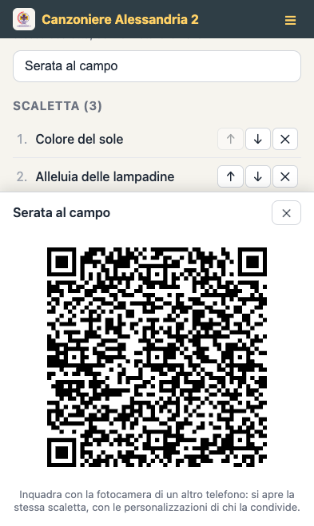
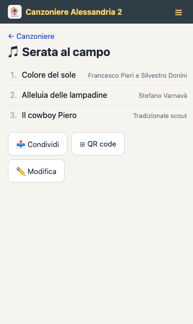
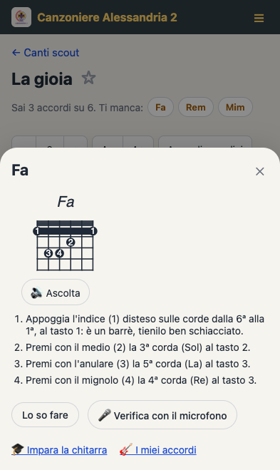
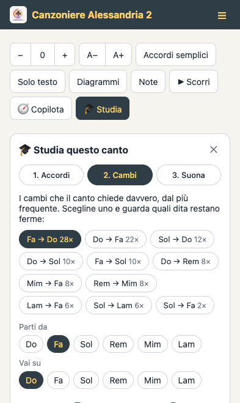

Canzoniere
Alessandria 2
LamI canti Fadel gruppo, Solsempre a portata di Michitarra.
Per cantare
Il reader, sul telefono di tutti
Una web app pensata per il fuoco di bivacco: si apre da qualsiasi browser, si installa sulla schermata Home e funziona anche senza connessione.
- Ricerca per titolo, artista o tag
- Trasposizione degli accordi in un tocco
- Accordi semplificati per chi inizia, con diagrammi per chitarra
- Modalità solo testo e scorrimento automatico




Per la serata
La scaletta passa con un QR code
Scegli i canti della serata e mostrali agli altri telefoni: basta inquadrare il QR code con la fotocamera, anche dove non c'è segnale.
- Il QR code si genera sul telefono, senza connessione
- Porta con sé le tue personalizzazioni: tonalità, accordi semplici, velocità di scorrimento
- Chi riceve legge i canti con le tue impostazioni, senza perdere le proprie
- In alternativa la scaletta viaggia anche come semplice link
Per chi inizia
Imparare la chitarra dentro i canti
Il canzoniere spiega la chitarra da zero: come si tiene, come si accorda, come nascono gli accordi, a cosa serve il capotasto e come si tiene il ritmo. Tutto si può toccare e ascoltare, e il suono lo genera il telefono, quindi funziona anche senza rete.
Con la modalità studente quelle spiegazioni entrano nei canti: gli accordi sopra le parole si toccano e si aprono sulla loro scheda, ogni canto dice quanto sei pronto e il pulsante «Studia» lo smonta in accordi, cambi e suonata finale.
- Segni gli accordi che sai fare e il canzoniere ti dice cosa puoi già suonare e cosa imparare dopo
- Ogni accordo ha il diagramma, i passi dito per dito, il suono e la verifica col microfono
- Sotto il titolo di un canto: quali accordi ti mancano e, quando c'è, il tono che lo rende suonabile con quelli che sai
- I cambi che il canto chiede davvero, con le dita che restano ferme e il metronomo



Per chi cura il canzoniere
L'editor, senza scrivere ChordPro a mano
Gli accordi sono pillole sopra il testo: un clic per aggiungerli, un trascinamento per spostarli. La scheda ChordPro resta sincronizzata, con evidenziazione della sintassi.
- Editor visuale e sorgente ChordPro sempre allineati
- Conversione dalla notazione inglese a quella latina (Am → Lam)
- Trasposizione di tutti gli accordi di ±1 semitono
- Gestione dei canzonieri per eventi: aggiunta, rimozione e riordino dei canti
make dev dalla radice del progetto. Dettagli nel README dell'editor.
Chi lo fa
Crediti
I canti raccolti qui sono stati scelti dai ragazzi del reparto del Gruppo Scout Alessandria 2: sono i canti che si cantano davvero attorno al fuoco, in route, alle veglie e alle messe.
Il canzoniere digitale, la web app, l'editor dei canti e il PDF stampabile, è stato realizzato da Luca Lusso.
Diritti d'autore. I testi e le musiche dei brani riprodotti sono di proprietà dei rispettivi autori ed editori, ai quali appartengono tutti i diritti di utilizzazione economica e i diritti morali ai sensi della legge 22 aprile 1941 n. 633. Questa raccolta non ha alcuna finalità di lucro e non viene venduta né distribuita commercialmente: i testi sono riprodotti al solo scopo di studio, di preghiera e di animazione delle attività educative del gruppo scout. Le eventuali attribuzioni indicate nei singoli canti sono riportate in buona fede e possono essere incomplete o imprecise.
Se sei titolare dei diritti su uno dei brani e desideri correggere l'attribuzione o richiedere la rimozione del testo, scrivi a canzoniere@alessandriascout.it: il contenuto sarà corretto o rimosso senza indugio.